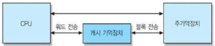
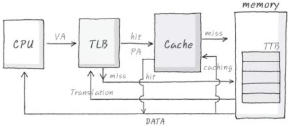
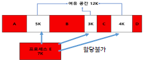
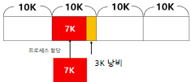
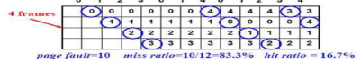
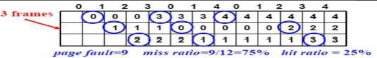

(범용) 범용 레지스터 (특수) 스택포인터, 베이스 레지스터, 인덱스 레지스터 (프로그램 제어) 프로그램 카운터 PC, 명령어 레지스터 IR, 상태 레지스터 PSW
(메모리 접근) 메모리 주소 레지스터 MAR, 메모리 버퍼 레지스터 MBR, 누산기 AC (입출력) I/O 주소 레지스터, I/O 버퍼 레지스터
캐시 메모리 (Cache Memory)
교재 p.233
암기: 시공순
구성작동원리(지역성)사상기법캐시 미스쓰기 정책교체기법
★ 빈출CPU, Memory 간 성능격차 해소, 사이의 고속기억
구분
내용
구성
Cache L1 L2 L3, Block, 사상기법, 교체알고리즘, 쓰기정책
작동원리(지역성)
시공순. 시간적, 공간적, 순차적 지역성
사상기법
주멤 블록이 어느 캐시라인 공유할지.
(유형) 직 : 태라단, 완 : 태단, 세 : 태세단 직접 : 태그 라인 단어 / 완전연관 : 태그 단어 / 세트 : 태그 세트 단어
캐시 미스
콜충용일. 콜드미스, 충돌미스, 용량미스, 일관성미스
쓰기 정책
Write Through, Write Back
교체기법
렌퍼오프리. 랜덤, FIFO, Optimal, LFU, LRU

📂 하위 토픽 (6)접기/펼치기
CPU 의 캐시 접근 구조
교재 p.234
캐시 미스 (Cache Miss)
교재 p.236
★ 빈출
캐시 사상 방식
교재 p.237
★ 빈출
캐시 교체 정책
교재 p.243
★ 빈출
캐시 쓰기 정책
교재 p.244
★ 빈출
캐시 일관성 (Cache Coherence)
교재 p.246
암기: (하드웨어 기반)
정책캐시 일관성 유지캐시 불일치 해결
★ 빈출변경된 캐시정보를 주 메모리와 동기화하는 기법.
구분
내용
정책
(기본유형) Write thorugh - 즉시, Write back - 지연 (보조정책) Write Allocate - 캐시 주멤 기록, No Write Allocate - 주멤 기록
CPU 논리주소 생성 → MMU 가상주소 전달
→ TLB 우선검색 → (Hit) → 즉시 물리주소 반환
→ (Miss) → 페이지테이블 접근 → (유효) → 물리주소 계산 → 실제 주소 접근 → CPU에 결과 반환
→ (무효) → Page Fault → Disk 에서 반입해 전달

단편화 (Fragmentation)
교재 p.262
암기: 외부 단편화
유형해결
★ 빈출메모리 공간이 비연속적/파편화 되어 효율적으로 사용되지 못하는 현상
구분
내용
유형
외부 단편화(부족) 내부 단편화(할당후 남는공간)
해결
통압프버슬. 통합, 압축, 프레임, 버디알고리즘, 슬랩할당


주기억장치 관리정책
교재 p.264
암기: (반입) 요구,예상 (배치)
관리정책+a
★★ 빈출운영 체제가 주기억장치를 효율적으로 사용하기 위해 결정하는 규칙.
구분
내용
관리정책
반배교할. (반입) 요구,예상 (배치) First, Next, Worst, Best (교체) FIFO, LFU, LRU, OPT, Random
(할당) 연속(고정분할, 가변분할) 불연속(페이징, 세그멘테이션, 페이지드세그멘테이션)
+a
연속할당 문제점 : 단편화, 연속공간요구, 다중프로세스 비효율 → 오버레이, 스와핑, 불연속할당, 메모리 압축
📂 하위 토픽 (5)접기/펼치기
페이징 (Paging)
교재 p.273
★ 빈출
세그멘테이션 (Segmentation)
교재 p.274
페이지드 세그멘테이션
교재 p.275
Second Chance Replacement
교재 p.280
FIFO 잦은 교체 단점 방지. 참조비트. 2차 기회 부여.
FIFO Anomaly
교재 p.281
원인예시해결
★ 빈출FIFO 페이지 교체 알고리즘에서, 프레임 수를 증가시켰음에도 불구하고 Page Fault 가 증가하는 비정상적 현상
구분
내용
원인
실제 사용 패턴(Locality) 고려하지 않음.
예시
012301401234 → 페이지 3개일 경우 9회, 4개일 경우 10회 부재 발생.
해결
LRU, OPT, Locality, PFF, Working Set


가상 메모리
교재 p.282
암기: (반입) 요구,예상 (배치)
특관리정책
★ 빈출보조기억장치 일부를 메모리 공간처럼 활용해, Swap 을 통해 물리 메모리 여유 공간을 확보하는 관리기법.
(범용) 범용 레지스터 (특수) 스택포인터, 베이스 레지스터, 인덱스 레지스터 (프로그램 제어) 프로그램 카운터 PC, 명령어 레지스터 IR, 상태 레지스터 PSW (메모리 접근) 메모리 주소 레지스터 MAR, 메모리 버퍼 레지스터 MBR, 누산기 AC (입출력) I/O 주소 레지스터, I/O 버퍼 레지스터
컴퓨터 구조 (CA)
캐시 메모리 (Cache Memory) — [구성]?
Cache L1 L2 L3, Block, 사상기법, 교체알고리즘, 쓰기정책
컴퓨터 구조 (CA)
캐시 메모리 (Cache Memory) — [작동원리(지역성)]?
시공순. 시간적, 공간적, 순차적 지역성
컴퓨터 구조 (CA)
캐시 일관성 (Cache Coherence) — [정책]?
(기본유형) Write thorugh - 즉시, Write back - 지연 (보조정책) Write Allocate - 캐시 주멤 기록, No Write Allocate - 주멤 기록